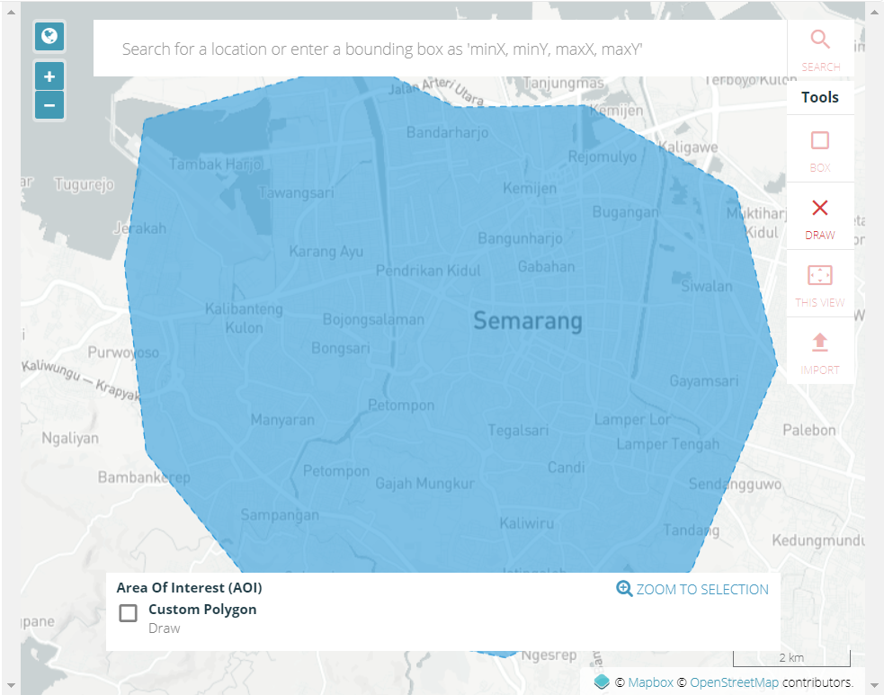
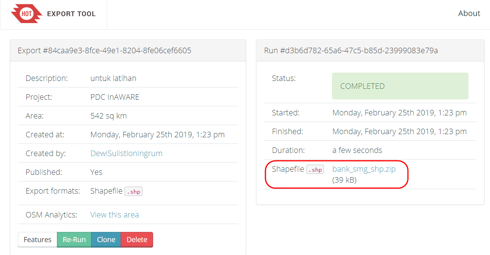

Penggunaan YAML pada Export Tool
Tujuan Pembelajaran:
- Mampu memahami konsep YAML
- Mampu membuat YAML untuk struktur data OSM
- Mampu mengoperasikan YAML untuk men-download data OSM pada Export Tool
Pada bab sebelumnya, Anda telah mempelajari bagaimana mengenal tag informasi objek di dalam OpenStreetMap. Anda juga telah menentukan objek-objek yang akan dikumpulkan pada saat survei lapang. Pada saat proses pengambilan data OSM yang telah di upload ke server menggunakan Export Tool, Anda menemukan kendala karena beberapa data atribut yang berasal dari tag info tidak dapat di download melalui tag yang disediakan Export Tool. Oleh karena itu, Anda dapat menggunakan YAML untuk men-download data dengan atribut yang sama seperti atribut yang dimasukkan saat pemetaan.
I. Pengertian YAML
YAML (YAML Ain't Markup Language) adalah sebuah struktur data sederhana yang dapat digunakan pada semua bahasa pemrograman. YAML dapat digunakan untuk membuat struktur data yang disesuaikan dengan tag (key dan value) data OSM, yang nantinya dapat berfungsi untuk menyaring data OSM berdasarkan presets yang digunakan saat proses memasukkan data OSM.
II. Pembuatan YAML untuk Filter Data di Export Tool
a. Struktur Data YAML Cara membuat YAML untuk struktur data OSM dapat dibagi menjadi empat bagian, yaitu :
- Judul file = menunjukkan nama file
- Types = menunjukkan tipe data pemetaan, terdiri dari points, lines, dan polygons
- Select = menunjukkan key yang berasal dari objek OSM
- Where = menunjukkan letak objek pada data OSM, terdiri dari key dan value dari objek tersebut
b. Syarat Format Penulisan Struktur Data YAML
Ada beberapa syarat yang harus diperhatikan dalam pembuatan struktur data YAML, yaitu :
- Penulisan terdiri dari huruf kecil, tidak boleh kapital
- Nama file/judul file diletakkan di awal dokumen dan tidak boleh ada spasi pada format penulisan judul file. Jika judul lebih dari dua kata, gunakan tanda _ sebagai pemisah kata
- Antar elemen struktur data harus sejajar seperti pada contoh di atas.
c. Proses Pembuatan YAML
Anda dapat membuka modul Pembuatan Model Data OSM untuk melihat daftar model data objek OSM yang akan dipetakan. Kemudian dari daftar tabel-tabel tersebut akan dibuat ke dalam struktur data YAML. Langkah-langkah untuk membuat YAML, yaitu:
- Buat daftar objek yang dipetakan yang sudah dibuat sebelumnya pada model data OSM
Tabel Model Data OSM untuk Objek Bank
| key | possible values |
|---|---|
| amenity | bank |
| building | bank |
| amenity | bank |
| name | isian nama |
| addr:full | isian alamat |
| capacity | <50, 50-100, 100-250, 250-500, >500 |
| building:levels | isian dalam bentuk angka |
| building:structure | confined_masonry (Rangka beton bertulang), steel_frame (Rangka baja), wood_frame (Rangka kayu), bamboo_frame (Rangka bambu) |
| building:walls | brick (Bata), concrete (Beton), wood (Papan kayu), bamboo (Bambu), glass (Kaca) |
| building:floor | ground (Tanah), wood (Papan kayu), cement (Plester / Semen), tekhel (Tegel), ceramics (Keramik) |
| building:roof | tile (Genteng), tin (Seng), asbestos (Asbes), concrete (Beton) |
| access:roof | yes (Ada), no (Tidak ada) |
| building:condition | poor (Buruk), good (Baik) |
| backup_generator | yes (Ada), no (Tidak ada) |
-
Buka Notepad yang tersedia pada laptop/komputer Anda.
-
Pada baris pertama ketikkan nama file yang akan dijadikan judul file, misalnya bank
bank: -
Pada baris kedua tekan enter + spasi empat kali dan ketikkan types:, kemudian tekan enter + spasi delapan kali + ketikkan - points/polygons/lines dan isi tipe data tersebut berdasarkan model data OSM dengan mengetikkan ke bawah baris
types: - points - polygons -
Tekan enter dan sesuaikan dengan baris types:, kemudian ketikkan select: → tekan enter + spasi delapan kali ketikkan daftar key yang terdapat pada objek “bank”.
select: - amenity - name - addr:full - addr:city - capacity:persons - building - building:levels - building:structure - building:walls - building:floor - building:roof - access:roof - building:condition - backup_generator - source -
Tahap terakhir, tekan enter dan sesuaikan dengan posisi types dan select → ketikkan where: key dan value.
where: amenity='bank' -
Anda dapat meneruskan pembuatan YAML sampai seluruh objek pemetaan dimasukkan, yang disamakan dengan format seperti sebelumnya.
-
Simpan struktur YAML tersebut dalam format .txt di dalam direktori komputer/laptop Anda.
bank: types: - points - polygons select: - amenity - name - addr:full - addr:city - capacity:persons - building - building:levels - building:structure - building:walls - building:floor - building:roof - access:roof - building:condition - backup_generator - source
III. Penggunaan YAML pada Export Tool
- Buka halaman situs Anda, dan ketikkan link berikut ini https://export.hotosm.org

- Anda harus masuk menggunakan akun OSM dengan klik Login di sudut kanan atas. Apabila muncul ‘Authorize access to your account’ klik Grant Access. Periksa alamat email Anda untuk mengkonfirmasi pembuatan akun pada email yang masih aktif. Klik tautan pada email tersebut untuk konfirmasi pembuatan akun.

- Sekarang Anda sudah masuk dengan menggunakan akun OSM, kemudian klik Start Exporting untuk memulai proses download data OSM
- Pada Menu Describe akan muncul formulir isian dan gambar peta seperti gambar di bawah ini, formulir isian yang wajib diisi dan Anda dapat memilih area yang diinginkan pada gambar peta di sebelah kanan.

- Ada beberapa cara untuk menggambarkan area yang akan dipilih :
Box = Menggambar area dengan menggunakan kotak. Jika Anda ingin mengulang untuk pembuatan kotak klik tanda X pada kolom Box.

Draw = Menggambar area yang dipilih secara manual, Anda dapat klik pada area yang ingin digambar dan diakhiri dengan klik dua kali.

Import = Menggunakan poligon dalam format .geojson untuk memilih area yang akan di download. Syarat format data .geojson yang dapat ditambahkan ke dalam Export Tool adalah harus satu fitur (satu baris) pada data atribut. Anda dapat membuka modul Menggunakan GeoJSON untuk mengetahui cara mendapatkan data .geojson.

- Jika sudah menyelesaikan formulir isian dan menentukan area yang akan di download, pilih menu Format. Pilih data spasial yang Anda inginkan, misalnya .shapefile

- Selanjutnya klik Menu Data → YAML. Salin struktur data YAML yang telah dibuat, tempelkan/paste ke kotak YAML
- Klik Menu Summary, Anda harus memilih apakah file ekspor ini akan dipublikasikan kepada umum atau hanya ada pada akun Anda. Kemudian klik Create Export untuk memulai proses ekspor data OSM.

- Tunggu beberapa saat sampai proses selesai. Jika file export Anda sudah selesai, Export Tool akan memberikan pemberitahuan melalui email, atau Anda dapat melihat hasilnya di Menu Export. Jika Anda ingin melihat hasil export yang dilakukan oleh pengguna lainnya, maka beri tanda centang Show all Export.
- Jika proses sudah selesai akan muncul kotak dialog seperti di bawah ini dengan status COMPLETED, klik tulisan berwarna biru seperti nama file.shp.zip untuk menyimpan hasil ekspor data OSM.

Latihan!
Buatlah 2 (dua) proyek baru di Export Tool dan download data OSM dengan menggunakan tautan YAML berikut https://tinyurl.com/group-stats. Data OSM tersebut akan digunakan pada bab selanjutnya mengenai perhitungan jumlah objek menggunakan plugin Group Stats. Jika Anda telah berhasil, maka akan ada 2 (dua) shapefile yaitu fasum dan jalan.
RINGKASAN
Anda telah menyelesaikan proses men-download data spasial dengan menggunakan Export Tool. Dengan menggunakan YAML, data yang dihasilkan akan sesuai dengan data yang dimasukkan pada proyek pemetaan. Sehingga file tersebut sudah tertata rapi dan teratur, Anda dapat membuka file tersebut, untuk melihat data-data yang sudah dihasilkan dari pemetaan. File yang sudah di-download dapat dibuka di software pemetaan seperti QGIS.